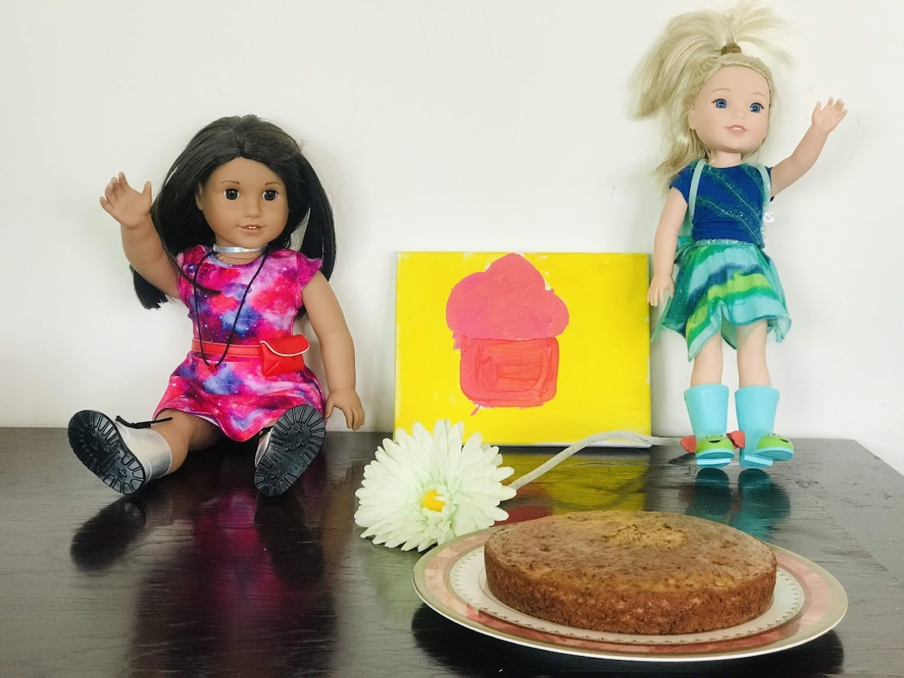
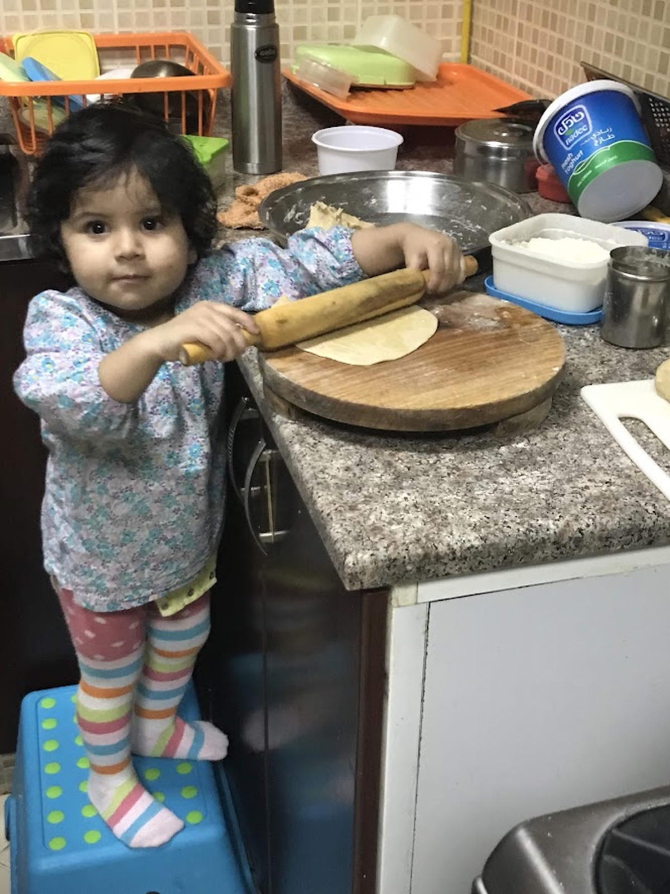

Meet the Baker
How a curious little girl became a baker who bakes for the people she loves.
"My very first customers? My two dolls, Lucy and Sophie."

I've been baking for as long as I can remember — first with my mum and sister, and pretty soon, happily on my own.
What started as my favourite weekend hobby slowly became something more: a way to look after the people I love. I bake sugar-free so my mum can have a slice, eggless so my friends never miss out, and — because the treats were just too tasty to keep to myself — for charity, too. For me, baking has always been about making people happy.

The rest of the story — the disasters, the dolls, and my lazy pancake mornings — is best told in my own words. 👇
Where It All Started
The mug cakes and banana cakes she filmed with her mum and sister — the very beginning of the hobby.
Baking a banana cake — where it all started.
A quick mug cake, made with her sister.
In Her Own Words
How did you first get into baking?
Vedhica: When I was small, my sister and my mum used to bake together, and I used to bake with them. But then one day, my mum was busy and told me I should start baking alone. So, I baked alone, and I really enjoyed it! I learned a lot from my mum and sister, especially when we filmed our YouTube videos making mug cakes and banana cakes. Now, it's just my favourite hobby.
Why did you decide to start baking for charity?
Vedhica: I really liked baking day-to-day, but we always just ate it ourselves or gave it to friends at birthday parties. Since they were really tasty, I thought, why not donate to some charities? I figured they might want some delicious treats, too!
You specialize in eggless and sugar-free treats. Why is that?
Vedhica: I focus on sugarless baking because my mum doesn't eat sugar, so I come up with special cakes just for her. And a lot of my friends don't eat eggs, so I make sure my cakes are eggless so they can enjoy them too. I just want to make people happy!
Who were your very first "customers"?
Vedhica: My American Girl dolls, Lucy and Sophie! It was their birthday on the 5th of June. My mum and I baked a special cake for them, put some flowers next to it, and sang Happy Birthday.
Do you ever have baking disasters?
Vedhica: Yeah, a few times! Sometimes the cakes don't turn out properly and it makes a huge mess. But I realised that you won't learn if you don't make mistakes.
What is a normal weekend morning like for you?
Vedhica: I love eating pancakes on weekends, so I always get up and make them completely independently first thing in the morning.
Do you want to be a professional chef when you grow up?
Vedhica: I'm in Year 10 in Dubai right now. I don't know for sure if I want to become a professional chef, but I do know that baking will always, always be my hobby.
See what she's baking lately, or the cause behind it all.